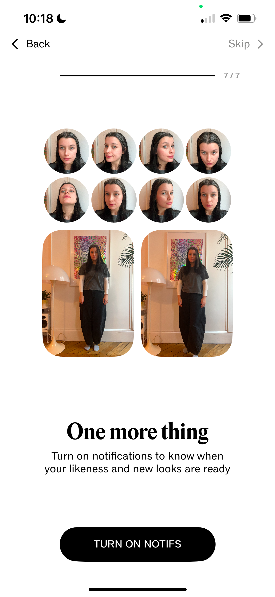
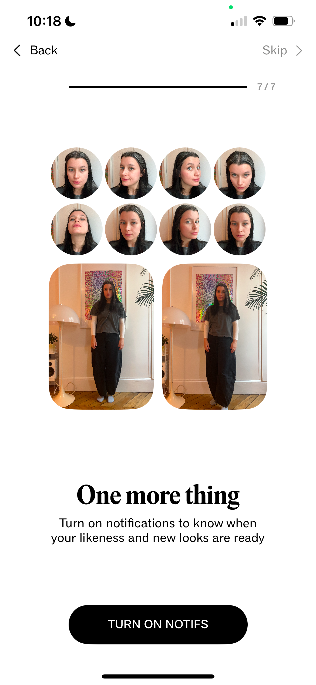
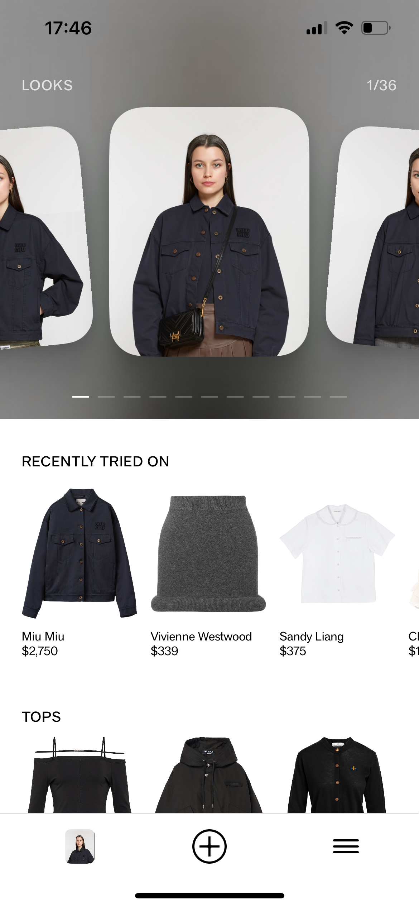
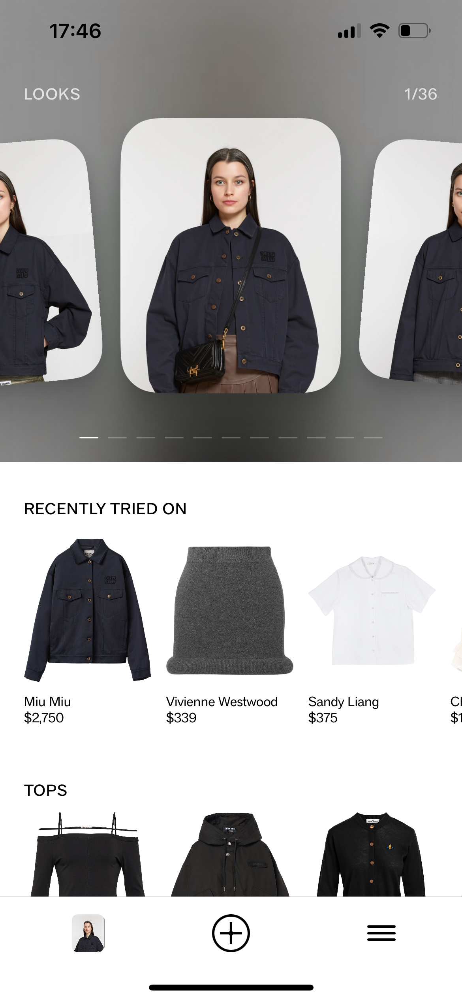

9 Jan 2025
AI try-ons in luxury fashion
I came across Doji, which is launching an app where users can try on clothes and see how they would look on their actual bodies before committing to purchase. This could be a game-changer and it’s something that can be achieved with the current state of AI technology.
82% of customers want AI to assist in reducing the time they spend researching what to buy according to McKinsey. With Doji, the user needs to upload 2 full-body photographs and 8 selfies, after this the user will be able to see studio like product images with your own body, looking like you have modeled the ecommerce catalog at SSENSE (it seems like that was the intention, the AI face expressions are very telling).
 

Many competitors have explored virtual try-ons for shoes, eyewear, makeup, and bags, but creating realistic 3D models of leather goods and clothing has always been incredibly challenging, especially for legacy luxury brands. The process is lengthy, and the file sizes are huge, which leads to a slow user experience. The technology is also not mature enough for mainstream adoption. There are a few interesting players like DRESSX who will continue down this path. An alternative to real-time virtual try-ons is static AI-generated outfits, also known as AI try-ons. This is a great alternative, albeit using different technology. It may be sufficient to help users make purchasing decisions, while a real-time virtual try-on in 3D is more of a gamified experience.
Try-ons are not a new idea… do you remember the outfit selection in Clueless? Recently, several people have picked up the idea and tried to recreate it, but these attempts require a lengthy setup. One thing we know about online shoppers is that they want immediate results and fast delivery.

The impact this could have on online shopping is enormous. Users would save time deciding what to buy, reduce returns (and their financial and ecological impact), and generally make shopping more fun, which is something that the younger generation is expecting more.
Here is a summary of my observations after getting access to their beta app:
✿ Doji is an app that you need to download from Apple’s App Store (once it becomes publicly available).
✿ The setup is an easy and quick user experience: it asks what I wear (Womenswear/Menswear, then it asks to take 8 selfies in good light and upload 2 full body photos. If you are sitting on a sofa or in bed, you still need to take the 8 selfies but then you can select a full-body photo from your photo library.
✿ After the setup, I have to wait 30mins for the app to generate my looks.
✿ The generated looks are very impressive and in general the photos look good. I can see looks and styles which I would never wear, but it’s fun to see my alter-egos.
Next steps for this to be adopted by brands:
✿ Integrate the look generation into the brand’s website. Having a button called ‘Generate my look’ would make this a fun shopping experience helping an indecisive user to buy the item.
✿ Ask users for their height and weight and generate a more realistic body. In my generated looks I look much taller and thinner.
✿ Allow me to do the styling. I imagine this might be more time consuming (both to develop and then for the user to generate), but the experience could be more rewarding with it. Currently in Doji when I select a YSL blouse to try-on, it then generates the full look with random trousers and boots.
✿ If you ask the user to wait 30mins when they start out while they are shopping, they might never return and forget about the AI try-on. This should be improved.
✿ Be able to adapt the photographs based on the brand’s e-commerce catalog photography style. Visually it would integrate very well into e-commerce, the user could really feel like part of the brand’s culture.
We are seeing more and more tools to visualise the objects around us virtually and experiment with clothing virtually (AR VTO, 3D product visualisation, AI avatar try-on and more). It's fun and they can all co-exist. The key challenge is ensuring that users love what they see on-screen and feel just as excited when the item arrives in their mailbox.


 



On the images wearing: Sandy Liang white top, Alaia black dress, Jacquemus x Nike white dress, Diesel top